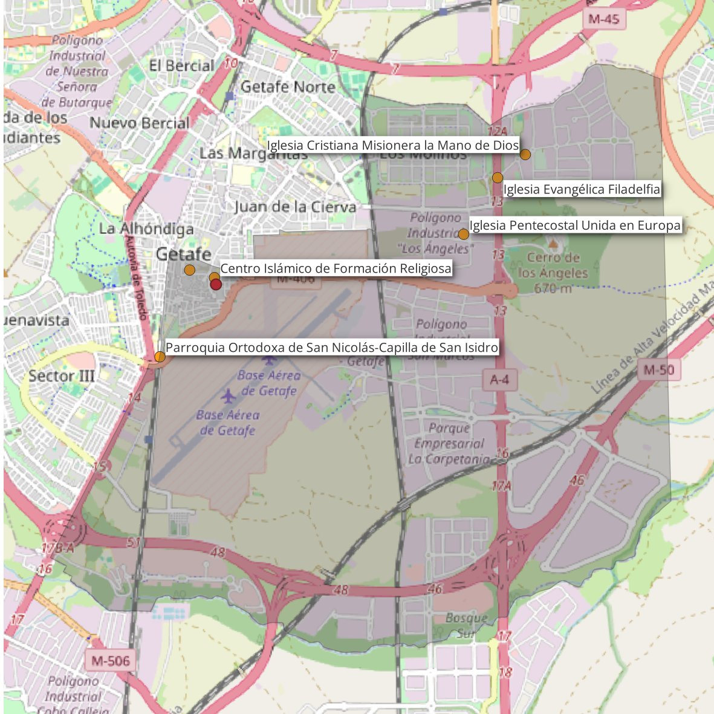
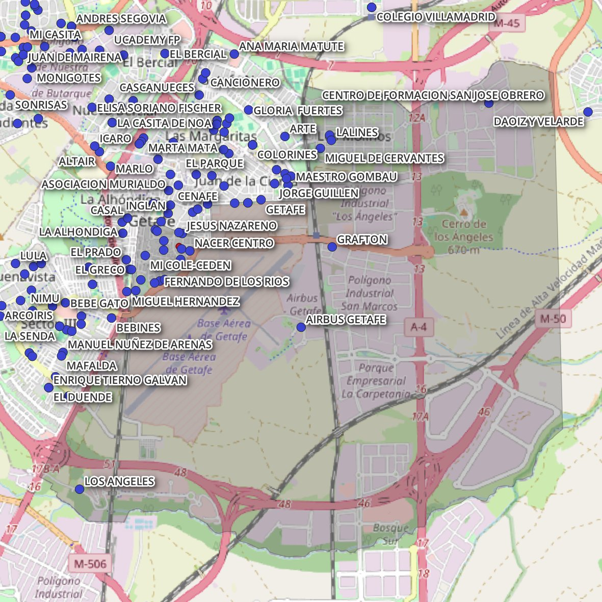

Puntos de interés en el territorio parroquial
Parroquia Santa María Magdalena (Getafe) · Arciprestazgo de Getafe
Entidades religiosas no católicas

6 entidades religiosas no católicas en el territorio de la parroquia.
Evangélicos (4)
- Iglesia Cristiana Misionera la Mano de DiosCalle Calidad 48, Getafe
- Iglesia Evangélica Bautista El Buen PastorPlaza Getafe 1, Madrid
- Iglesia Evangélica FiladelfiaAvenida Cerro de los Ángeles 32, Madrid
- Iglesia Pentecostal Unida en EuropaCalle Torneros 23, Getafe
Musulmanes (1)
- Centro Islámico de Formación ReligiosaCalle Alonso Cano 3 B, Madrid
Ortodoxos (1)
- Parroquia Ortodoxa de San Nicolás-Capilla de San IsidroCalle Toledo 42, Getafe
Fuente: Registro de Entidades Religiosas del Ministerio de la Presidencia, Justicia y Relaciones con las Cortes. Situación en el mapa: dirección geocodificada con CartoCiudad (IGN) o Nominatim (OpenStreetMap).
Centros educativos

23 centros educativos en el territorio de la parroquia (público: 13, privado: 8, privado concertado: 2).
| Centro | Tipo | Titularidad | Domicilio | Web |
|---|---|---|---|---|
| ACUARELA | Escuela infantil-casa de niños | Público | Avenida de los Ángeles, 26, 28903 Getafe | Página web |
| AIRBUS GETAFE | Escuela infantil privada | Privado | Parque Empr. Carpetania 2ª fase, subparcela 2, 28906 Getafe | |
| ALARNES | Instituto de educación secundaria | Público | Calle Toledo, 44, 28901 Getafe | Página web |
| CASA DE LA CULTURA | Centro público de educación de personas adultas | Público | Calle Guadalajara, 3, 28901 Getafe | Página web |
| CASA DE LOS NIÑOS | Escuela infantil | Público | Avenida de los Ángeles, 24, 28903 Getafe | Página web |
| CASIOPEA | Escuela infantil | Público | Calle Toledo, 54, 28901 Getafe | Página web |
| DENENES | Escuela infantil privada | Privado | Plaza de las Carretas, 5, 28901 Getafe | Página web |
| DOCTOR SEVERO OCHOA | Colegio de educación infantil y primaria | Público | Avenida de los Ángeles, 26, 28903 Getafe | Página web |
| E.O.I. DE GETAFE | Escuela oficial de idiomas | Público | Calle del Hospital de San José, 22, 28901 Getafe | Página web |
| FERNANDO DE LOS RIOS | Colegio de educación infantil y primaria | Público | Avenida de las Fuerzas Armadas, 4, 28901 Getafe | Página web |
| FRANCISCO DE QUEVEDO | Colegio de educación infantil y primaria | Público | Avenida de las Fuerzas Armadas, 6, 28901 Getafe | Página web |
| GRAFTON | Centro privado de formación profesional específica | Privado | Calle Francisco Gasco Santillán, 2, 28906 Getafe | |
| HEIDI GARABATOS LOS MOLINOS | Escuela infantil privada | Privado | Avenida del Ingenioso Hidalgo, 5, 28900 Getafe | |
| JESUS NAZARENO | Centro privado de educación infantil, primaria y secundaria | Privado concertado | Calle del Hospital de San José, 28, 28901 Getafe | Página web |
| LALINES | Escuela infantil privada | Privado | Calle de la Albanega, 2, 28906 Getafe | Página web |
| LEON FELIPE | Instituto de educación secundaria | Público | Avenida de las Fuerzas Armadas, s/n, 28901 Getafe | Página web |
| LOS ANGELES | Centro privado de educación infantil, primaria y secundaria | Privado concertado | Paseo de Tiselius, 5, 28906 Getafe | Página web |
| MARIA | Escuela infantil privada | Privado | Calle Pasión, 6, 28901 Getafe | Página web |
| MATEMATICO PUIG ADAM | Instituto de educación secundaria | Público | Calle Toledo, 45, 28901 Getafe | Página web |
| MI COLE-CEDEN | Escuela infantil privada | Privado | Calle Fuenlabrada, 30, 28901 Getafe | Página web |
| MIGUEL DE CERVANTES | Colegio de educación infantil, primaria y secundaria | Público | Calle de Maritornes c/v Insula Malindrania, 28906 Getafe | Página web |
| NACER CENTRO | Escuela infantil privada | Privado | Calle Pasión, 26, 28901 Getafe | Página web |
| SAGRADO CORAZON | Colegio de educación infantil, primaria y secundaria | Público | Calle Guadalajara, 2, 28901 Getafe | Página web |
Fuente: registro de centros educativos de la Comunidad de Madrid. Solo se recogen los centros de alta.